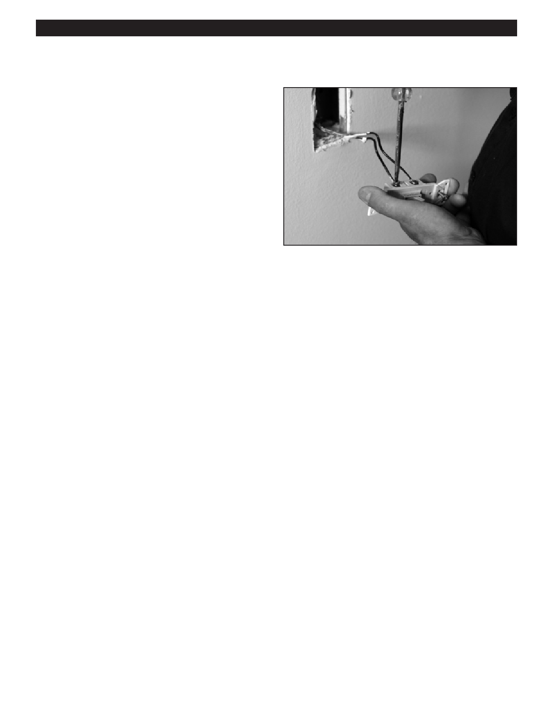

PA RT I C I PA N T R E S O U R C E G U I D E
Replacing a Single-pole Wall Switch (Continued)
How-to Steps
1. Remove the wires from the screw terminals.
2. If the wires are broken or nicked, use a wire stripper
or combination tool to remove insulation from the last
1/4 inch of the end of the wires.
3. Use a combination tool or needlenose pliers to bend the
end of the wire in a semicircle so it can wrap around the
terminal screw.
4. Connect the wires to a new single-pole wall switch that
has the same ratings. Make sure the connection is tight.
5. Push the switch into the electrical box and screw into
place, making sure the switch is plumb—straight up
and down.
6. Replace the switch cover, return power to the circuit,
and test the wall switch to make sure it works.
40